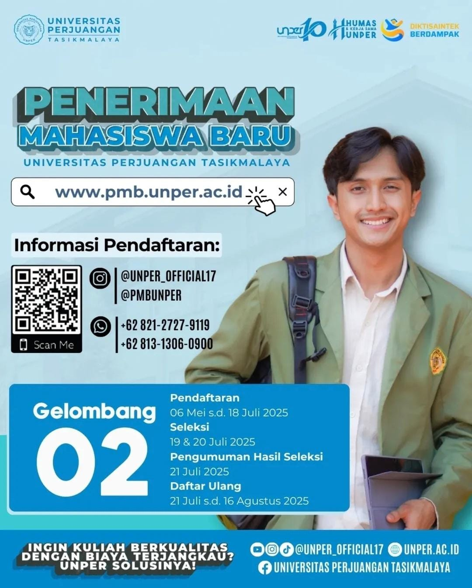

UNIVERSITAS PERJUANGAN TASIKMALAYA
Penerimaan Mahasiswa Baru

Jurnal Ilmiah

SELAMAT DATANG DI UNIVERSITAS PERJUANGAN TASIKMALAYA
Universitas Perjuangan (UNPER) Tasikmalaya adalah sebuah universitas swasta yang berada di bawah naungan Yayasan Universitas Siliwangi. Didirikan melalui SK Mendikbud RI No. 603/E/O/2014 pada tanggal 17 Oktober 2014.
Dengan Akreditasi Perguruan Tinggi **"Baik"**, UNPER berkomitmen menyelenggarakan Tri Dharma Perguruan Tinggi yang bermutu untuk menghasilkan sumber daya manusia yang unggul, berkarakter kejuangan, dan berbasis kearifan lokal.
Copyright © 2025 Raihan - Universitas Perjuangan Tasikmalaya